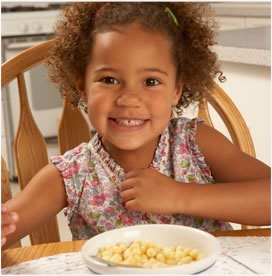
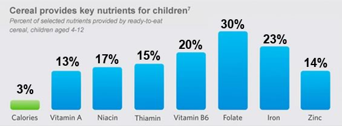

Which important nutrients do fortified cereals provide?
Fortified breakfast cereals provide more iron, folic acid, zinc, B vitamins and fiber than any other conventional non-cereal breakfast choice.
Many fortified cereals also add vitamin A, thiamin, niacin, calcium, phosphorous, magnesium and/or potassium. When combined with fortified milk, the levels of healthful micronutrients and macronutrients in cereals provide for a nutrient-dense breakfast meal.
That's why General Mills fortifies its entire line of kid cereals with calcium and vitamin D.

Cereal Provides Important Nutrients
Cereal is one of the breakfast choices for your kids. Learn More
Cereal Provides Important Nutrients
Cereal is one of the breakfast choices for your kids. Learn More
Cereal Provides Important Nutrients
Cereal is one of the breakfast choices for your kids. Learn More
Tags
Click on a category to view other articles
antioxidants